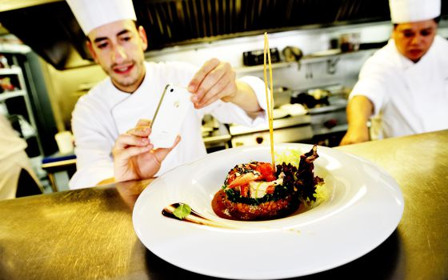
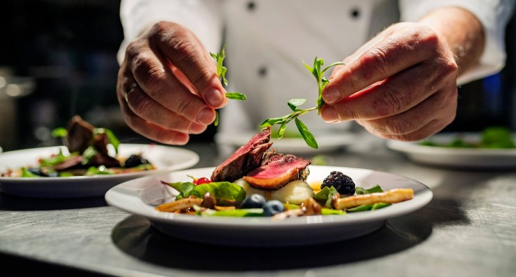

Son un tipo de masa (pastas) alargada, de ancho pequeño y forma achatada que integran el conjunto de las paste asciutte (pastas secas) de origen italiano. Aunque los que se conocen en toda Europa y otros sitios provienen directamente de Italia, existe una polémica sobre su origen ya que en China se vienen preparando fideos semejantes a los tallarines y spaguetti desde más de un milenio antes que en Italia.
Caviar

Se llama caviar al huevo del pez esturión que es consumida por los humanos. De las veinticinco variedades existentes de esturión, tres de ellas se pueden capturar en el mar Caspio: beluga, sevruga y esturión ruso u osiotr. El alto precio del caviar es un reflejo de la rareza o escasa disponibilidad del esturión
Gourmet

Un gourmet, gastrónomo o gurmé es una persona con gusto delicado y exquisito paladar, conocedor de los platos de cocina significativamente refinados, que tiene la capacidad de ser catador de talentos de gastronomía al probar el nivel de sabor, fineza y calidad de ciertos alimentos y vino